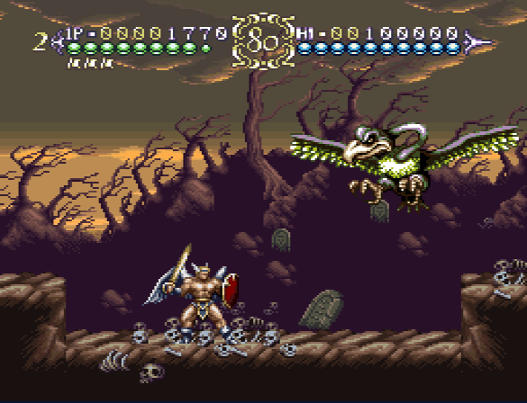

2021-xx-xx
ActRaiser 2 is, as you might've guessed, the sequel to ActRaiser. Made on the request of Enix of America, the game thusly features no sim parts and only consists of action stages. It is an extremely difficult game and the controls feel rather clunky until you really get acquainted with them.
Few people have played this game and even fewer have tried their hand at speedrunning it, but one person has went above and beyond for this game - PJDicesare. PJ is running the game at an extremely high level; both precise execution and getting favorable random outcomes are hugely important.
An early case of significant randomness appears in the shape of the Death Condor in Modero, the third stage of the speedrun. The miniboss hovers in the air and will either shoot fireballs or dive towards the player. The desired outcome is a dive; if it doesn't dive, we just have to wait out the fireballs until it dives.
PJ would frequently reset the game if the boss didn't dive, as it would cost too much time. At that time I was starting to learn how to inspect the inner workings of games and decided to see if I couldn't figure out just how random this boss truly is!
The code to select action is rather straightforward, as can be seen below:
Select_action()
Update_RNG()
if(rng_state[0] & 1) //if RNG value is odd
{
Dive()
}
else //if RNG value is even
{
Shoot()
}
return
Pseudocode representation of the original assembly code
The game simply updates the RNG and checks if the updated value is even or odd to pick an action. The RNG is functionally identical to the one used in ActRaiser 1 (an Add-with-carry algorithm) with some slight adjustments to the code, so I won't go over it here again. See my previous article if you wish to see the code.
There was one important change made from ActRaiser 1 however: there's no outside influence on the RNG state! Screen transitions would alter the RNG state in a way that was impossible to control but this was removed for the sequel; it can now only be updated by calling the Update_RNG function when needed. This gives us much better chances for manipulating the RNG.
Having figured out the RNG, it was time to see if we could now track it up until Death Condor!
Feeling enthusiastic, I hopped on PJ's stream and reported my findings so far. He says "Great! Can we track the RNG up until the Modero boss?"
I quickly fired up the emulator, ready to watch for any changes in the RNG state and...